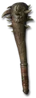

Heyday

Demon Limb
Tyrant Club
Damage: 32-58
Required Level: 75
+300-365% Enhanced Weapon Damage
Adds 222-333 Fire Damage
+7-13% Life stolen per hit
Level 50 Enchant (10 charges)
Repairs 1 Durability in 20 Seconds
+150-200% Damage to Demons
+15-20% Fire Resistance
Unique Club
Demon Limb
- Type
- Club
- Base
- Tyrant Club
- Tier
- Elite
- Required level
- 75
- Item level
- 71
- Required strength
- 133
- Max sockets
- 3